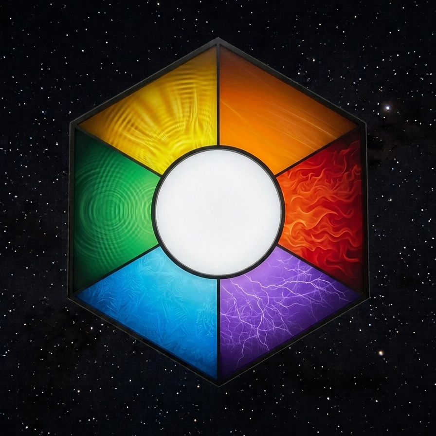

[From the Dean's Desk, written by Benjamin Pittock]
Subject: Religions
Prerequisite: Read through Book 5 before opening these notes.

The selkie believe in the true god. I tried to discuss theology with Companion and found out Irene masked a lot of their religion by straight word replacement.
When I tried to explain this to Companion, who is very devout, he saw no problem with it. To him true god is just human sounds and Control is another set of human sounds. When I said Control is a computer that runs the structure, he saw that as the true god. When I explained that a god alters the very fabric of existence he saw that as just another way to describe a control system.
| Selkie | Human |
|---|---|
| true god | Control |
| spirit | nanobots |
| blessed | integrated |
| holy | interface |
| true god's domain | structure's area of influence |
I have noticed the students from the structure say Control like it is a god's name. I can see how in a couple more generations they could very easily start treating and worshiping Control as a god, just as the selkie do.
Elves in contrast have eight gods, and then they have Oversight. Oversight is a kind of worker who functions under the gods, carrying out their directives. The elven eight deities are the goddesses of light, earth, lightning and movement and the gods of air, water, fire and darkness.
My sister thinks the elven gods are based on the magic trees. Irene defines magic as the controls for the technology in the structure. These are signaled with numbers. I imagine them as a kind of easy button, like how our motion sensitive lights eliminate the need for a switch on the wall. While the switch on the wall eliminated the need to strike a match. These easy controls are spells. Spells that begin with the same number all deal with same type of technology.
| Tree | Element | Deity |
|---|---|---|
| 0 | Light | goddess of light |
| 1 | Air | god of air |
| 2 | Earth | goddess of earth |
| 3 | Water | god of water |
| 4 | Lightning | goddess of lightning |
| 5 | Fire | god of fire |
| 6 | Speed | goddess of movement |
| 7 | Unknown | god of darkness |
This interpretation of the elven gods has left her with a mystery, since there is no seven tree.
I have yet to get Unkell to admit the trolls have any religious beliefs at all. I am not certain if that means they don't have any, or if they consider religion too private to share.